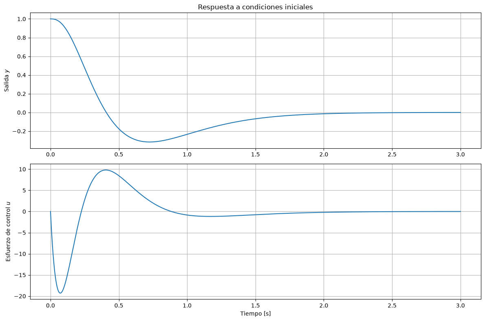
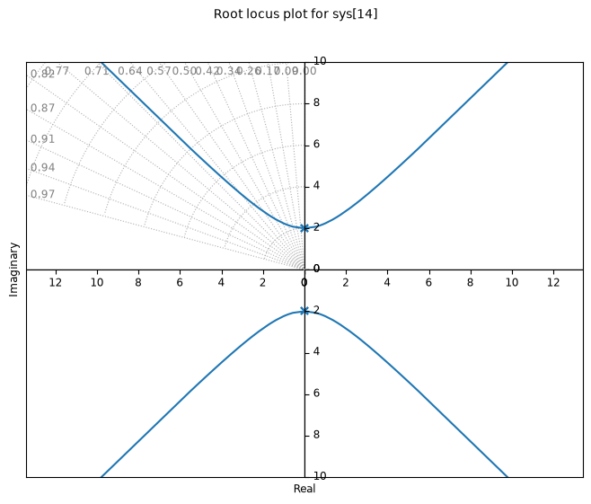
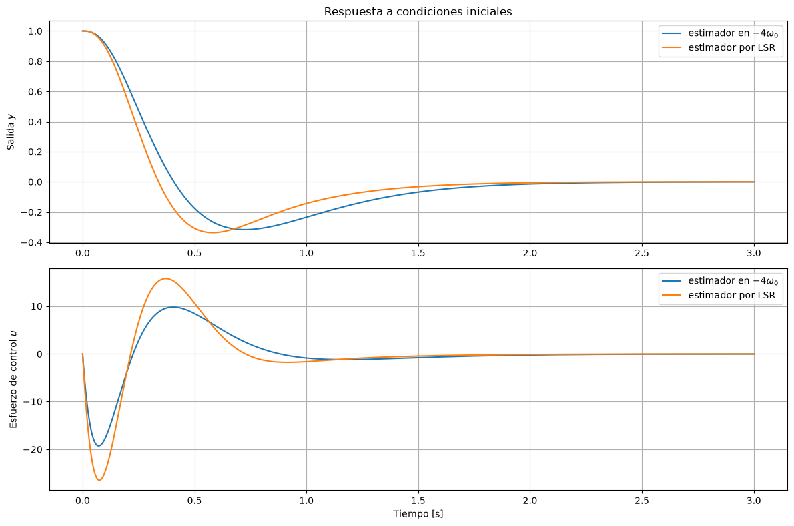

Diseño del sistema de control del péndulo#
Seguimos con el ejemplo de teoría, pero con un pequeño cambio:
w0=2
A=[[0,1],[-w0**2,0]]
B=[[0],[1]]
C=[1,0]
D=0
pendulo=ctrl.ss(A,B,C,D)
pendulo
Obtención de la ley de control#
Ubicamos los dos polos de la ley de control en \(-2\omega_0\). Como son polos repetidos usamos acker, que devuelve un vector 1-D; lo convertimos en matriz fila para poder operar con él:
K=np.atleast_2d(ctrl.acker(pendulo.A,pendulo.B,[-2*w0,-2*w0]))
K
array([[12., 8.]])
Diseño del estimador completo#
Ubicamos los polos del estimador en \(-4\omega_0\):
L=np.atleast_2d(ctrl.acker(pendulo.A.T,pendulo.C.T,[-4*w0,-4*w0])).T
L
array([[16.],
[60.]])
Verificamos los autovalores de la ley de control y del estimador:
np.linalg.eigvals(pendulo.A-pendulo.B@K)
array([-3.99999997, -4.00000003])
np.linalg.eigvals(pendulo.A-L@pendulo.C)
array([-7.99999993, -8.00000007])
Definimos el sistema compensador (entrada \(y\), salida \(u\))#
s=pendulo
Acomp=s.A-s.B@K-L@s.C
Bcomp=L
Ccomp=-K
comp=ctrl.ss(Acomp,Bcomp,Ccomp,0)
comp
np.linalg.eigvals(comp.A)
array([-12.+7.74596669j, -12.-7.74596669j])
Vemos que los polos del compensador son estables.
comp.zeros()
array([-0.30952381+0.j])
Verificamos que los polos a lazo cerrado del sistema compensado son los adecuados:
sys_comp = ctrl.feedback(-s*comp)
sys_comp.poles()
array([-8.00000044+0.00000000e+00j, -7.99999956+0.00000000e+00j,
-4. +2.65155119e-07j, -4. -2.65155119e-07j])
Los polos a lazo cerrado son la unión de los polos de la ley de control (\(-2\omega_0\)) y los del estimador (\(-4\omega_0\)), como predice el principio de separación.
Sistema completo#
Conectamos la planta y el compensador con interconnect, que une las señales que tienen el mismo nombre. La planta tiene entrada u y salida y; el compensador tiene entrada y y salida uc; y un sumador forma u = uc + w. Así el sistema conectado tiene una entrada auxiliar w (que en este caso dejamos en cero) y dos salidas: la salida de la planta y y el esfuerzo de control uc.
def lazo_cerrado(compensador):
planta = ctrl.ss(s.A, s.B, s.C, s.D, inputs='u', outputs='y', name='planta')
comp_n = ctrl.ss(compensador.A, compensador.B, compensador.C, compensador.D,
inputs='y', outputs='uc', name='compensador')
suma = ctrl.summing_junction(inputs=['uc', 'w'], output='u', name='suma')
return ctrl.interconnect([planta, comp_n, suma], inplist='w', outlist=['y', 'uc'])
Simulamos la respuesta a una condición inicial en la posición del péndulo (los dos primeros estados son los de la planta y los dos últimos los del compensador):
sys_completo = lazo_cerrado(comp)
t,y = ctrl.initial_response(sys_completo, X0=[1,0,0,0], T=np.linspace(0,3,1001))

np.linalg.eigvals(sys_completo.A)
array([-8. +3.30072092e-07j, -8. -3.30072092e-07j,
-4.00000025+0.00000000e+00j, -3.99999975+0.00000000e+00j])
Ubicación óptima de los autovalores del estimador#
Usamos el lugar simétrico de las raíces para el estimador. Para eso necesitamos la función de transferencia desde la entrada de ruido de proceso hasta la salida, \(G_e(s) = \mathbf{C}(s\mathbf I - \mathbf A)^{-1}\mathbf B_1\). Suponemos que el ruido de proceso entra por el mismo lugar que la entrada de control, \(\mathbf{B_1} = \mathbf{B}\):
B1=B
def conjugate_tf(G):
"""Devuelve G(-s) para un sistema SISO."""
num = ctrl.tf(G).num[0][0]
den = ctrl.tf(G).den[0][0]
# el coeficiente i multiplica a s^(n-1-i)
nume = [c*(-1)**(len(num)-1-i) for i, c in enumerate(num)]
dene = [c*(-1)**(len(den)-1-i) for i, c in enumerate(den)]
return ctrl.tf(nume, dene)
aux1 = ctrl.ss(A,B1,C,D)
aux2 = conjugate_tf(aux1)
G_srle = ctrl.tf(aux1)*aux2
ctrl.rlocus(G_srle, xlim=[-8,8], ylim=[-10,10]); # aumentamos los límites para ver la zona donde queremos ubicar los polos
plt.gcf().set_size_inches(8,6)
Ignoring fixed x limits to fulfill fixed data aspect with adjustable data limits.

Elegimos la ganancia del lugar simétrico (por ejemplo, haciendo clic sobre las ramas del gráfico interactivo) y obtenemos los polos estables correspondientes:
k = 8000
r = ctrl.root_locus_map(G_srle, gains=[k]).loci[0]
r
array([-6.53957633-6.83857138j, -6.53957633+6.83857138j,
6.53957633-6.83857138j, 6.53957633+6.83857138j])
rsel = r[np.real(r)<0]
rsel
array([-6.53957633-6.83857138j, -6.53957633+6.83857138j])
L = ctrl.place(pendulo.A.T, pendulo.C.T, rsel).T
L
array([[13.07915266],
[85.53211714]])
comp_srl = ctrl.ss(s.A-s.B@K-L@s.C, L, -K, 0)
comp_srl.poles()
array([-10.53957633+9.75103426j, -10.53957633-9.75103426j])
sys_completo_srl = lazo_cerrado(comp_srl)
t_srl, y_srl = ctrl.initial_response(sys_completo_srl, X0=[1,0,0,0], T=np.linspace(0,3,1001))
Comparamos las respuestas de los dos diseños:
